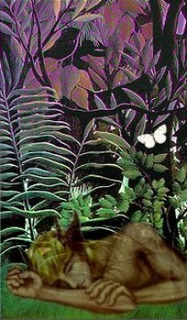

Margaret Menamin
The Hoofman
They said he was the devil. Where he walked
the earth sprang scars, knife-deep and subtly splayed.
The women whispered in their gloves and talked
of how he sometimes came to them but made
them mostly want to follow him. He stayed
alone, could not be tracked, gave no address.
He seemed to have a preference for shade
or darkened places. Though the men were less
aware of him and not inclined to guess
his hidden haunts and habits, women fought
to learn his secrets, begging to possess
his arrogance. And, bit by bit, he taught
delicious wicked thoughts, set them afire
with fantasy and candor and desire.
Caged LizardThese are roaming animals with large space needs for their size...uromastyxes are burrowing lizards, and need substrate deep enough to burrow in, or a low structure under which to hide. — Wikipedia.
The uromastyx on display
turns tail upon his audience
and readies for another day
exposed, enclosed behind a fence.
The dry gray cactus on the floor
is meaningless to one who's known
the Asian sunlight at his door
and warmed himself on honest stone.
This shrunken world bewilders him:
There were no corners in his past.
Existence is a synonym
for futile searching to the last.
Intent upon the task at hand
he patiently ignores us all.
He scratches in the shallow sand,
he pushes at the metal wall.
Afternoon of a Faun
You have seen him before
when he loitered on the edge
of a landscape somewhere in childhood
or one of those faraway dreams
that happened in another forest:
those colors you remember
that have no names.
Now you step off the old log road
into a sudden clearing
that was not there yesterday.
Grass brilliant as glass
teases your memory,
draws your eyes to the sleeping form
at the center of paradise.
You stand still as a moth
but the birds, the mad joyous birds
peal like bells from the grove.
He turns and meets your eyes
and for a moment he is not afraid.
Then he sees how your hands
are filled with years. He does not know
how to read the history of your face.
A white butterfly teaches him to evanesce
and you are alone in the trees.
Margaret Menamin, a native of Missouri and now a resident of Murrysville, PA, is a former newspaper reporter, among many other jobs, some of which she’d like to forget. You may read more of her work at www.menamin.com.
|